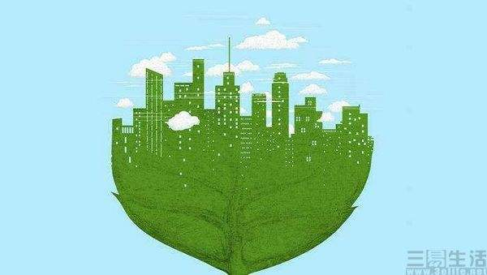

Le développement coordonné de l'économie, de la société, des ressources et de la protection de l'environnement est un système indissociable qui non seulement atteint l'objectif du développement économique, mais protège également les ressources naturelles et l'environnement tels que l'atmosphère, l'eau douce, l'océan, les terres et les forêts dont dépend l'humanité. Pour que les générations futures puissent se développer et vivre dans la paix et la satisfaction.

Le développement durable fait référence à un développement qui non seulement répond aux besoins des populations contemporaines, mais ne constitue pas une menace pour les besoins des générations futures. Il est d'abord venu du développement durable de l'environnement, poursuivant la coexistence harmonieuse de l'homme et de la nature, puis lié à la société et à l'économie, formant le concept de développement durable de la société humaine, réduisant les inégalités dans le temps et dans l'espace.
La mise en œuvre d'une stratégie de développement durable est propice à la promotion de l'unification des bénéfices écologiques, économiques et sociaux.
Il est propice à la promotion de la transformation du mode de croissance économique d'extensif à intensif, et à l'harmonisation du développement économique avec la population, les ressources et l'environnement.
Il est propice au développement soutenu, stable et sain de l'économie nationale et améliore le niveau de vie et la qualité de la population.
Passer de la focalisation sur le développement des intérêts immédiats et des intérêts partiels au développement des intérêts à long terme et des intérêts globaux, et du développement conduit par les ressources matérielles au développement conduit par des ressources immatérielles ou des ressources informationnelles (technologie et savoir).
Le monde a une population nombreuse, une pénurie de ressources naturelles et un grand fossé entre les fondements économiques et le niveau technologique. Ce n'est qu'en contrôlant la population, en conservant les ressources et en protégeant l'environnement qu'un cercle vertueux de société et d'économie peut être réalisé et que le développement sous tous ses aspects peut être maintenu.
Dans les années 1960, les pays développés ont acheté de grandes quantités de terres agricoles pour cultiver du café et de la canne à sucre en Afrique et en Amérique du Sud, et ont utilisé cet argent pour acheter des céréales pour approvisionner les résidents locaux. Cependant, en raison de l'aménagement excessif des terres et du manque de planification, les contrats à terme sur le café et le sucre se sont dépréciés en peu de temps. Les économies de l'Amérique du Sud se sont soudainement effondrées, associées à l'expansion continue de l'érosion des sols, de l'abus de pesticides et de la consommation excessive, qui ont rendu la terre stérile et même désertifiée, entraînant la famine.
Dans les années 1960, les pays développés ont acheté de grandes quantités de terres agricoles pour cultiver du café et de la canne à sucre en Afrique et en Amérique du Sud, et ont utilisé cet argent pour acheter des céréales pour approvisionner les résidents locaux. Cependant, en raison de l'aménagement excessif des terres et du manque de planification, les contrats à terme sur le café et le sucre se sont dépréciés en peu de temps. Les économies de l'Amérique du Sud se sont soudainement effondrées, associées à l'expansion continue de l'érosion des sols, de l'abus de pesticides et de la consommation excessive, qui ont rendu la terre stérile et même désertifiée, entraînant la famine.
La première apparition du «développement durable » est apparue dans la littérature scientifique au début des années 80, la première fois dans une publication destinée au grand public en 1987 dans le rapport intitulé Our Common Future (Notre avenir à tous) de la Commission mondiale pour le développement et l'environnement de l'Organisation des Nations unies rédigé par la Norvégienne Gro Harlem Brundtland.
Retour en haut de la page
trois éléments
Le développement durable n'équivaut pas simplement à l'écologisation ou à la protection de l'environnement, on pense généralement qu'il comporte trois aspects.
Aspect environnemental
Se réfère à la minimisation des dommages à l'environnement (impact environnemental). Bien que ce principe soit reconnu par toutes les parties, différents groupes sociaux ont souvent des imaginations différentes, des perspectives différentes et des normes de jugement de valeur différentes pour le développement social, de sorte qu'ils ont des interprétations différentes du problème. Par exemple, les centrales nucléaires, les partisans estiment que cela peut réduire les émissions de gaz à effet de serre et sont respectueuses de l'environnement, les opposants estiment que les déchets nucléaires ont une pollution radioactive à long terme, le stockage des déchets nucléaires est controversé et les centrales nucléaires ont des risques de sécurité cachés qui ne sont pas respectueux de l'environnement.
Aspect social Se réfère à toujours répondre aux besoins des êtres humains. Le développement durable n'exige pas que les humains retournent à la société primitive, même si les humains à cette époque ont causé des dommages minimes à l'environnement.
Aspect économique
Cela doit être économiquement rentable. Cela a deux implications : l'une est que seuls les projets de développement économiquement rentables sont susceptibles d'être promus et maintiennent leur durabilité, l'autre est que les projets économiquement déficitaires bénéficieront inévitablement d'autres projets rentables. Ce n'est qu'en obtenant des subventions que la balance des paiements et des dépenses peut fonctionner normalement, ce qui peut entraîner la protection de l'environnement dans cet endroit au prix de dommages environnementaux plus graves dans d'autres endroits.
Le développement durable met l'accent sur le développement coordonné des trois éléments, favorise le progrès global de la société et évite le bénéfice d'un aspect au détriment du développement d'autres aspects et du bénéfice global de la société.
Retour en haut de la page
cas de nutella
Les producteurs de cacao sont confrontés à divers problèmes économiques et sociaux, c'est pourquoi Ferrero s'est engagé en 2011 à s'approvisionner de manière responsable en fèves de cacao 100 % certifiées d'ici 2020 afin d'améliorer leurs conditions de vie et d'encourager des pratiques durables.
En nous approvisionnant en cacao auprès d'exploitations agricoles Rainforest Alliance Certifed ou certifiées UTZ il contribuons à améliorer les moyens de subsistance des agriculteurs et de leur famille ainsi qu'à préserver les ressources naturelles et la biodiversité.
cacao Nutella Retour en haut de la page